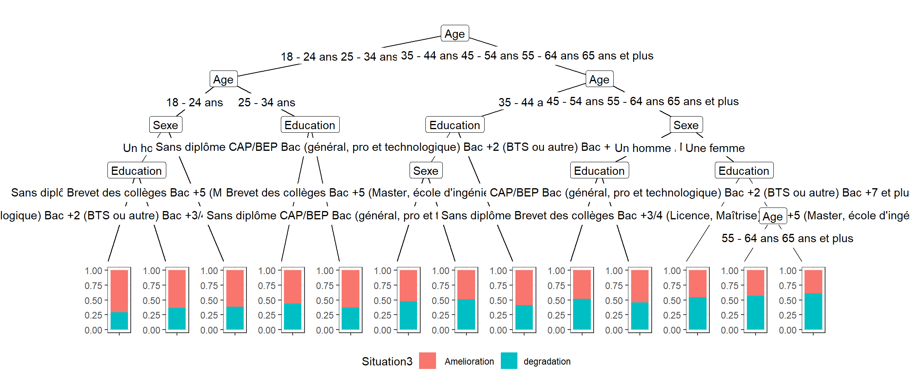

Chapitre 14 Arbre de Décision
L’objectif de cette note est double. Le premier est une introduction aux méthodes d’arbres de décision et leur généralisation récente par les random forests. Le second est d’introduire à l’approche d’apprentissage et de test, autrement aux machine learning avec le package caret qui facilite la condition des opérations d’échantillonngage, de découpage des échanges et de production des indicateurs.
14.1 Construire un arbre de décision
Les origines et le principe
C’est une approche qui remonte à Morgan and Sonquist (1963)
généralisés aux variables qualitatives avec Chaid (Kass (1980)) :
Le principe général suis le pseudo algorithme suivant :
pour chaque variable potentiellement explicative, trouver le meilleur découpage (dichotomique), c’est à dire celui qui va différencier au mieux la variable de réponse. Choisir parmi les variables et leur dichotomitsation celle qui répond au même critère que précedemment recommencer l’opération à 1 Il peut s’appliquer à une variable quantitative ( regression) ou qualitative ( chaid)
puis Cart avec breiman. Breiman (1998)
14.2 Mise en oeuvre avec Partykit
Le package partykit a pour objectif de représenter les arbres de décisions. Il inclue cependant plusieurs méthodes d’arbres de decisions, en en particulier une approche ctree Hothorn et al. (2006) dont le principe est. La méthode est incluse dans partykit Hothorn and Zeileis (2015)
Avec partykit on contrôle la construction de l’arbre sur différents critères, par exemple : * le type de test employé pour prendre la décision * le nombre minimum d’individus dans une feuille terminale
https://apiacoa.org/blog/2014/02/initiation-a-rpart.fr.html
https://apiacoa.org/blog/2014/02/initiation-a-rpart.fr.html
knitr::opts_chunk$set(echo = TRUE, include=TRUE, cache=TRUE, message=FALSE, warning=FALSE)
library(partykit)
library(tidyverse)
#lecture du fichier
df<-readRDS("./data/last.rds") %>%drop_na()
df$Age<-as.factor(df$Age)
df$Sexe<-as.factor(df$Sexe)
df$Education<-factor(df$Education, ordered = FALSE )
df$Situation2<-as.factor(df$Situation2)
df$Situation3<-as.factor(ifelse(df$Situation<5,"degradation"," Amelioration"))
table(df$Situation3)##
## Amelioration degradation
## 20327 19071fit <-ctree(Situation3 ~ Age+Sexe+Education, data=df)
print(fit)##
## Model formula:
## Situation3 ~ Age + Sexe + Education
##
## Fitted party:
## [1] root
## | [2] Age in 18 - 24 ans, 25 - 34 ans
## | | [3] Age in 18 - 24 ans
## | | | [4] Sexe in Un homme
## | | | | [5] Education in Sans diplôme, Brevet des collèges, Bac +5 (Master, école d'ingénieurs, d'arts...): Amelioration (n = 725, err = 29.2%)
## | | | | [6] Education in CAP/BEP, Bac (général, pro et technologique), Bac +2 (BTS ou autre), Bac +3/4 (Licence, Maîtrise), Bac +7 et plus (doctorat, thèse, etc.): Amelioration (n = 1710, err = 36.2%)
## | | | [7] Sexe in Une femme: Amelioration (n = 3963, err = 38.3%)
## | | [8] Age in 25 - 34 ans
## | | | [9] Education in Sans diplôme, CAP/BEP, Bac (général, pro et technologique), Bac +2 (BTS ou autre), Bac +3/4 (Licence, Maîtrise): Amelioration (n = 4956, err = 43.9%)
## | | | [10] Education in Brevet des collèges, Bac +5 (Master, école d'ingénieurs, d'arts...), Bac +7 et plus (doctorat, thèse, etc.): Amelioration (n = 1347, err = 37.2%)
## | [11] Age in 35 - 44 ans, 45 - 54 ans, 55 - 64 ans, 65 ans et plus
## | | [12] Age in 35 - 44 ans
## | | | [13] Education in Sans diplôme, CAP/BEP, Bac (général, pro et technologique), Bac +2 (BTS ou autre), Bac +3/4 (Licence, Maîtrise)
## | | | | [14] Sexe in Un homme: Amelioration (n = 2588, err = 47.6%)
## | | | | [15] Sexe in Une femme: degradation (n = 4926, err = 48.8%)
## | | | [16] Education in Brevet des collèges, Bac +5 (Master, école d'ingénieurs, d'arts...), Bac +7 et plus (doctorat, thèse, etc.): Amelioration (n = 1323, err = 41.3%)
## | | [17] Age in 45 - 54 ans, 55 - 64 ans, 65 ans et plus
## | | | [18] Sexe in Un homme
## | | | | [19] Education in Sans diplôme, CAP/BEP, Bac (général, pro et technologique), Bac +2 (BTS ou autre), Bac +3/4 (Licence, Maîtrise), Bac +7 et plus (doctorat, thèse, etc.): degradation (n = 5675, err = 48.3%)
## | | | | [20] Education in Brevet des collèges, Bac +5 (Master, école d'ingénieurs, d'arts...): Amelioration (n = 1282, err = 45.6%)
## | | | [21] Sexe in Une femme
## | | | | [22] Education in Sans diplôme, Brevet des collèges, Bac +3/4 (Licence, Maîtrise), Bac +5 (Master, école d'ingénieurs, d'arts...): degradation (n = 4250, err = 45.6%)
## | | | | [23] Education in CAP/BEP, Bac (général, pro et technologique), Bac +2 (BTS ou autre), Bac +7 et plus (doctorat, thèse, etc.)
## | | | | | [24] Age in 45 - 54 ans: degradation (n = 2929, err = 43.3%)
## | | | | | [25] Age in 55 - 64 ans, 65 ans et plus: degradation (n = 3724, err = 39.4%)
##
## Number of inner nodes: 12
## Number of terminal nodes: 13pred <- predict(fit, df)
library(caret)
cm = confusionMatrix(df$Situation3, pred)
print(cm)## Confusion Matrix and Statistics
##
## Reference
## Prediction Amelioration degradation
## Amelioration 10507 9820
## degradation 7387 11684
##
## Accuracy : 0.5633
## 95% CI : (0.5583, 0.5682)
## No Information Rate : 0.5458
## P-Value [Acc > NIR] : 1.769e-12
##
## Kappa : 0.129
##
## Mcnemar's Test P-Value : < 2.2e-16
##
## Sensitivity : 0.5872
## Specificity : 0.5433
## Pos Pred Value : 0.5169
## Neg Pred Value : 0.6127
## Prevalence : 0.4542
## Detection Rate : 0.2667
## Detection Prevalence : 0.5159
## Balanced Accuracy : 0.5653
##
## 'Positive' Class : Amelioration
## library(ggparty)
autoplot(fit)
#library(irks)
#rules<-ct_rules(fit)
#rules %>%
# kable() %>%
# kable_styling(bootstrap_options = "striped", font_size = 10)